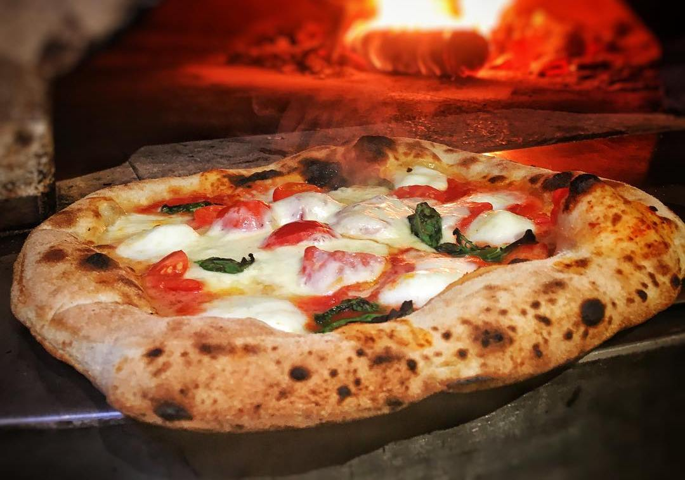

Margherita DOP
Mozzarella di bufala campana DOP, pomodoro San Marzano e basilico fresco appena colto. La regina del forno a legna.
€10
🌾 🥛

Immagina questa pagina che si apre all'istante quando il cliente inquadra il tuo QR Code al tavolo, o la trova se cerca menu ristorante FORNO & MARE. Semplice, veloce, senza PDF da scaricare.
Legenda allergeni
🌾 glutine 🥛 latte 🥚 uova 🐟 pesce 🦐 crostacei 🦪 molluschi 🌰 frutta a guscio 🍇 solfiti
In caso di dubbi o allergie specifiche, chiedi sempre al personale.